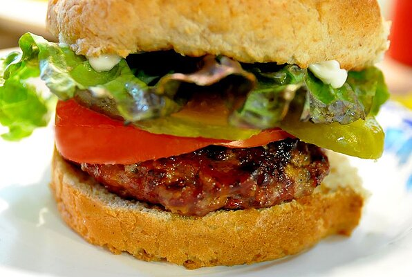

Cheddar Bacon Hamburgers

Description
A great and easy way to add some flavor to your hamburgers!
Ingredients
- 1 pound ground beef
- ½ cup shredded Cheddar cheese
- 2 tablespoons prepared horseradish
- ½ teaspoon salt
- ½ teaspoon pepper
- ½ teaspoon garlic powder
- ½ cup real bacon bits
- 4 hamburger buns
Steps
- Preheat grill for high heat.
- In a large bowl, mix together the ground beef, Cheddar cheese, horseradish, salt, pepper, garlic powder,
and bacon bits using your hands. Shape the mixture into 4 hamburger patties.
- Lightly oil the grill grate. Place hamburger patties on the grill, and cook for 5 minutes per side,
or until well done. Serve on buns.
Back to the index